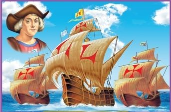

Descubrimiento de America:Se denomina descubrimiento de américa por las naciones europeas al acontecimiento histórico sucedido el 12 de octubre de 1492
Cristobal Colon:Cristóbal Colón, en representación de los Reyes Católicos de Castilla y Aragón, reinos españoles, realizó cuatro famosos viajes desde Europa a América en 1492, 1493, 1498 y 1502. En el primero de ellos llegó a América el 12 de octubre de 1492, a una isla de las Bahamas llamada Guanahani.
consistente en la llegada a América de una expedición española dirigida por Cristóbal Colón por mandato de los Reyes Católicos, Isabel de Castilla y Fernando de Aragón. Colón había partido del Puerto de Palos (España) dos meses y nueve días antes y, tras cruzar el océano Atlántico, llegó a una isla del continente americano
Varios años después de la llegada de Colón, los españoles fueron percatándose de que el lugar al que habían llegado no estaba conectado por tierra a Europa y el resto de la «tierra conocida», como se esperaba de la India, sino que formaba un continente distinto. Así, a partir de 1507 se le comenzó a llamar América.